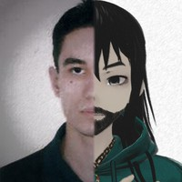

von Schappler(aka Manoel Viturino)

Summary
If you met an autistic person, you have not met Autism. You have, in
fact, met just one of the many representations of it.
I am an autistic invidual with a Bsc Degree on Physics by Universidade
Católica de Brasilia 2004:.
I have experience in Physics and Geophysics, with emphasis on Quantum
Physics, Mechanics and Fields, working mainly with the following themes:
OpenGL, Quantum Chaos, Chaos Classic. I have spent some time studying
Hamiltonian and developed applications for simulation of Physical
phenomena and Geophysical surveys.
I also worked in education, where I taught elementary school for classes
of second base and high school classes. I worked as a Geophysical Data
Processor at Prospectors Aerolevantamentos e Sistemas where I developed
routines for automated production of map layouts using software Oasis
Montaj, and made use of processing routines to generate geophysical /
geological survey maps.
I am certified by AutoDesk 3ds Max Elementary and 3ds Max Advanced
Modules, while having completed two short courses by Geosoft Incorporated
and completed a Graphical Designer course at SAGA.
Currently I am taking online courses at Udemy, while also creating my own
courses, in order to share the knowledge I have attained with other
people.
Education
Formal Education
- 2004: Degree on Physics at Univerisade Católica de Brasília
Complimentary Education
- (2024) The Ultimate React Course: React, Redux and More ay Udemy
- 2003: Web Design for Web Developers at Udemy
-
(2023) Node.js, Express MongoDb and more: The complete Bootcamp at Udemy
- (2023) The Complete Web Development Bootcamp at Udemy
- (2023) Complete NodeJS Developer in 2003 at Udemy
-
(2011) Graphics Desginer at SAGA - School of Art, Games and Animation
- (2009) Advanced Geophysics at Geosoft Inc.
-
(2009) 3ds Max Basic and Advanced at AZIMUT - AutoDesk Traning Center
- (2008) Basic Geophysics at Geosoft Inc.
Work Experience (last 3 job occupation)
- 2016 - present: Webdev freelancing for small local companies
Line of work:
- Creation of brands/logos
- Creation of websites for small companies
- Lecture of private classes about Webdevelopment
-
2008-2010: Data Scientist at Prospectors Aerolevantamento e Sistemas S/A
Line of work:
- Geophysical Data Processing
-
Application devepolment for use on Geophysical Data Processing and
Automatization of creation of Geophysical Syrvey Maps
- Flight planning for Geophysical Data Aquisition
- (2006-2007) - Teacher at Instituto de Educação Sagarana
Line of work:
- Mathematics and Physics teacher for high school grade
- Mathematics and Basic Science for elementary grade
Skills
- Spoken languages:
- Portuguese: fluent
- English: Intermediate
- Spanis: Intermeditate
- Programming Languages:
- C: intermediate
- Fortran: basic
- Pascal/Delphi: basic
- Python 2.17: intermediate
- HTML: advanced
- CSS: advanced
- JavaScript: advanced
- Tech-stack libraries
-
User Interface development
- electron.js: intermediate
- TkInter on Python 2.7: intermediate
-
Frontend development
- Fomantic-ui (formely known as semantic-ui): advanced
- Bootstrap: basic
- TailwindCSS: advanced
- Material UI/UI-X: intermediate to advanced
- React / Nexj.js: intermediate to advanced
-
Backend development
- Servers using express.js: intermediate to advanced
- PostgresSQL + Sequelize: intermeditate to advanced
- MongoDB + Mongoose: intermediate
Awards, certificates and other published work
- Essays, Expanded summaries for conferences and other
-
2004: User's guide for Rotinas de processamento de dados para Oasis
Montaj
- 2004: User's guide for Equilíbrio Químico
-
2004: Equilíbrio Químico - usando a informática para o Ensino (essay)
-
2004: Cálculo da Aceleração da Gravidade em Laborário didático
(expanded summary)
-
2003: Impureza hidrogenóide magnética sujeita a confinamento quântico
(essay)
-
2003: Hydrogenic imprutiy in a parabolic wire in a magnetic field
(expanded summary)
- 2002: Automatos celulares determinísticos (essay)
- Non patented or Registered softwares
- Rotinas de Processamento de dados para Oasis Montaj
Sofware made with GXC script language to help Geophysicists to process
and interprete geophysical data for surveys
- Equilíbrio Químico
Sofware made using Pascal to help students to understand how to
operate with calculation of chemical equilibium of substances
- Impureza Hidrogenóide: caos clássico e quântico
Software made using C and OpenGL to simulate the movement of
hydrogenic particles confined inside a magnetic field, both from the
classical and chaotic mechanics overview
Merits, flaws and other information
- Merits
- I consider myself a focused person
- I can self-learn things fast if necessary
-
I don't have problems in sharing knowldge, as long as anyone is
willing to follow as I tell them to proceed
- Flaws
- I work better when I work alone
- I'm extremely perffectionist
- I consider myself anti-social
- I take other people judgment about myself hardly
-
People tend to see me as a toxic person because of my autistic
behavior
- I dislike when things are not done on my way
- Other links